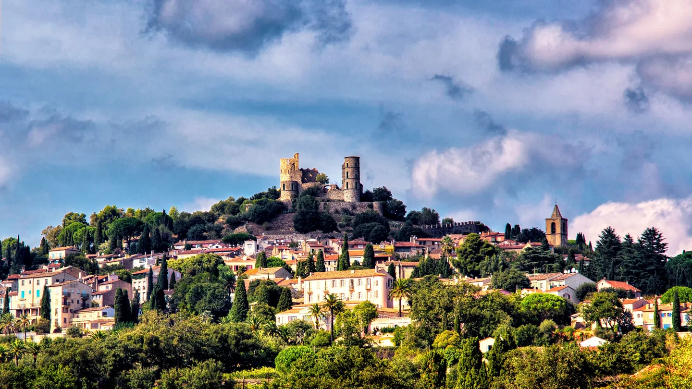
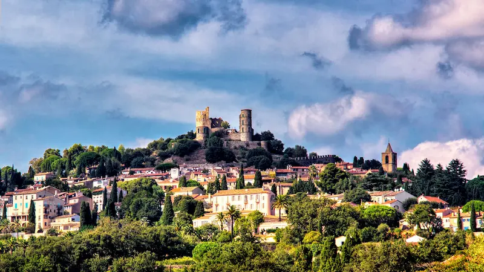
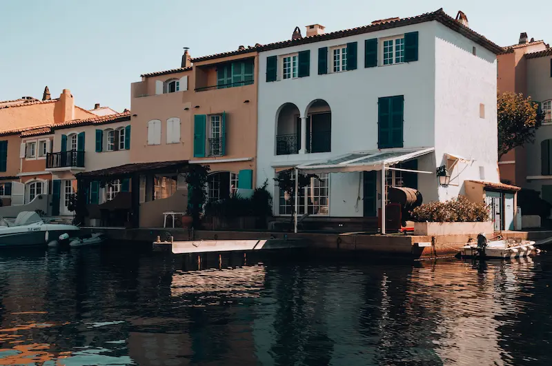
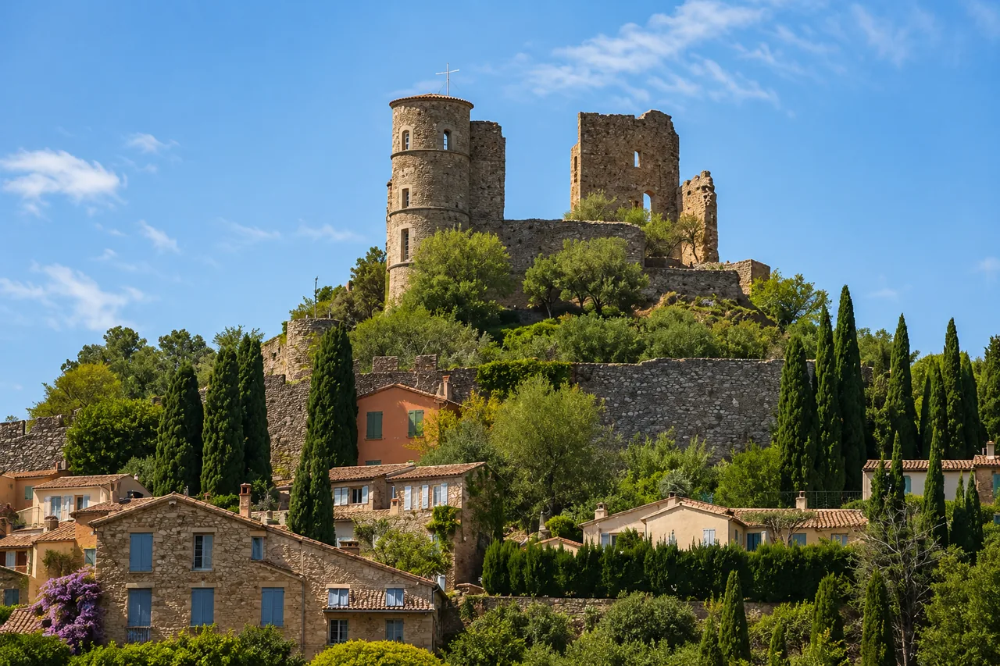
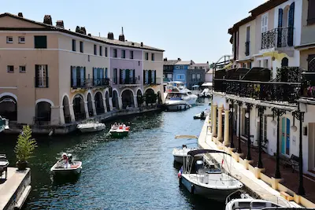
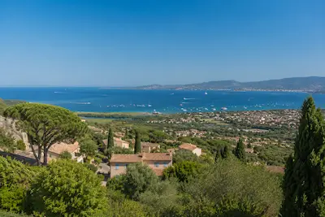

Web Essentiel
À partir de600€
- ✓ 3 pages professionnelles
- ✓ 100% responsive mobile
- ✓ Formulaire de contact
- ✓ SEO local Grimaud inclus
- ✓ Propriété 100% à vous

Village médiéval perché ou cité lacustre internationale — Grimaud est un territoire double, à la clientèle exigeante. Agence immobilière, restaurant ou conciergerie : je crée des sites sur mesure, codés à la main, qui valorisent votre activité face à une clientèle locale et internationale.
Grimaud est le seul territoire du Var à combiner un village médiéval classé et une cité construite sur l'eau fréquentée par une clientèle internationale. Deux marchés distincts — un seul développeur web local pour les servir.


Grimaud concentre des secteurs très spécifiques — immobilier de luxe, restauration gastronomique, conciergeries premium. Chaque site est conçu pour les requêtes Google spécifiques à Grimaud et au Golfe de Saint-Tropez.
Listings filtrables, fiches villas sur canaux, galerie premium, multilingue FR/EN/DE. Référencé sur "immobilier Port Grimaud", "villa à vendre Grimaud", "location villa Golfe Saint-Tropez".
Menu en ligne, réservation WhatsApp ou directe, galerie immersive, multilingue FR/EN/IT. Visible sur "restaurant Grimaud", "dîner village médiéval Var", "restaurant Port Grimaud".
Site multilingue, formulaire de services haut de gamme, interface premium. Référencé sur "conciergerie Grimaud", "services premium Port Grimaud", "conciergerie Golfe Saint-Tropez".
Électriciens, coiffeurs, prestataires de service — sites rapides avec bouton d'appel direct et SEO Grimaud pour capter la demande locale.
Votre activité n'est pas listée ? J'accompagne tous les professionnels de Grimaud et Port Grimaud — architectes, décorateurs, photographes, guides touristiques, prestataires événementiels.
Parlons de votre projet →
Grimaud est un cas unique dans le Var. D'un côté, le village médiéval perché — ses ruelles, son château du XIe siècle, ses restaurants gastronomiques et ses conciergeries. De l'autre, Port Grimaud — la "Venise provençale" construite par François Spoerry, avec ses 2 500 maisons sur canaux, ses pontons privés et sa clientèle internationale parmi les plus fortunées d'Europe.
Ces deux territoires ont en commun une chose : leurs clients cherchent sur Google avant de se déplacer. Un investisseur britannique qui cherche une agence immobilière à Port Grimaud, un Parisien qui réserve une table gastronomique à Grimaud pour le week-end — tous passent par une recherche Google avant de vous contacter.


Les requêtes Google de Grimaud ciblent soit le village ("restaurant Grimaud", "conciergerie Grimaud") soit Port Grimaud ("immobilier Port Grimaud", "villa à vendre Port Grimaud", "location villa Golfe Saint-Tropez"). Ce sont deux intentions de recherche distinctes.
Chaque site que je crée est optimisé pour les deux territoires dès la mise en ligne : balises H1 géolocalisées, Schema.org LocalBusiness, Google Business Profile configuré et lié au site. Un restaurant du village cible "restaurant Grimaud village". Une agence immobilière cible "agence immobilière Port Grimaud" et la page dédiée agence immobilière Grimaud. Vous apparaissez là où cherchent vos clients.
La clientèle de Port Grimaud est l'une des plus internationales de France. Britanniques, Scandinaves, Allemands, Belges, Néerlandais — une grande partie des propriétaires ne parle pas français, ou préfère naviguer dans leur langue. Pour une agence immobilière ou une conciergerie à Port Grimaud, un site uniquement en français laisse passer 60 à 70% de la clientèle potentielle.
Je crée des sites internet multilingues pour les professionnels de Port Grimaud : FR/EN/DE/IT selon votre clientèle cible. C'est exactement ce que j'ai réalisé pour Azur Villa Prestige — une référence pour l'immobilier de luxe du Golfe.
Basé à Saint-Tropez, je suis à 15 minutes de Grimaud. Je me déplace au village ou à Port Grimaud pour la première réunion. Je connais les deux territoires, leurs clientèles et les spécificités de chaque secteur d'activité local.
J'interviens également dans les communes voisines : Cogolin, Ramatuelle, Gassin et Sainte-Maxime. Chaque ville a sa page dédiée avec un SEO spécifique.
Ces exemples illustrent le niveau de qualité que je crée pour les professionnels de Grimaud, Port Grimaud et du Golfe de Saint-Tropez.

Site multilingue FR/EN/DE/IT, galerie premium, chatbot leads, brochure automatique. Conçu pour capter des mandats et des acheteurs internationaux à Port Grimaud et dans le Golfe.
Voir la démo → → Page dédiée agence immo Grimaud
7 pages haut de gamme, multilingue FR/EN/IT, réservation WhatsApp, galerie immersive. 100/100 PageSpeed. La référence pour les restaurants du village médiéval.
Voir la démo → → Étude de cas complète
6 pages, 100/100 PageSpeed. Bouton d'urgence visible, formulaire devis. SEO "électricien Grimaud", "artisan Port Grimaud". Résultats en 4 semaines.
Voir la démo → → Étude de cas complète
Agence immobilière, restaurant, conciergerie, location saisonnière… Devis gratuit sous 24h, maquette avant de commencer.
Demander un devis gratuit →Village médiéval ou cité lacustre — je comprends les deux marchés, leurs clientèles distinctes et les requêtes Google spécifiques à chaque territoire.
La clientèle de Port Grimaud est internationale. Je crée des sites en plusieurs langues pour capter les acheteurs britanniques, scandinaves et germaniques qui représentent la majorité du marché.
Zéro WordPress, 100% code à la main. Chargement en moins d'une seconde sur mobile 4G. Google récompense la vitesse avec de meilleures positions.
H1 géolocalisés, Schema.org LocalBusiness, Google Business Profile optimisé. Vous apparaissez sur "votre activité + Grimaud" et "votre activité + Port Grimaud" en 4 à 8 semaines.
Votre site vous appartient entièrement — code, contenu, domaine. Aucun abonnement obligatoire, aucun enfermement plateforme. Vous gardez le contrôle total.
Saint-Tropez à 15 minutes de Grimaud. Je me déplace au village ou à Port Grimaud pour les réunions. Un prestataire local, pas une agence distante.
On discute de votre activité à Grimaud ou Port Grimaud, votre clientèle cible, vos objectifs. Devis clair sous 24h. Sans engagement.
Direction artistique adaptée à votre image — premium pour Port Grimaud, authentique pour le village. Vous validez avant le développement.
Code à la main, optimisé Grimaud et Port Grimaud. Multilingue si besoin. Tests mobile, vitesse, accessibilité.
Lancement, Google Search Console, Google Business Profile Grimaud. Je reste disponible — à 15 minutes.
Pas de frais cachés. Un devis clair avant de commencer — vous restez propriétaire à 100%.
Basé à Saint-Tropez, je crée des sites internet pour les professionnels de Grimaud, Port Grimaud et des communes voisines. Chaque ville a sa page dédiée avec un SEO spécifique.
Création site internet Grimaud · Site internet Port Grimaud · Développeur web Grimaud Var 83 · Agence immobilière Port Grimaud · Saint-Tropez · Cogolin · Ramatuelle · Sainte-Maxime · Gassin · Var (83)
La création d'un site internet à Grimaud commence à partir de 600€ pour un site vitrine 3 pages. Pour les agences immobilières, restaurants et conciergeries de Port Grimaud, le budget est entre 1 300€ et 3 000€ selon les fonctionnalités — multilingue, galerie immersive, réservation en ligne. Devis gratuit sous 24h.
Oui, c'est ma spécialité pour Port Grimaud. Je crée des sites en FR/EN/DE/IT selon votre clientèle cible. La clientèle de Port Grimaud est majoritairement internationale — britannique, scandinave, allemande, belge. Un site uniquement en français laisse passer une grande partie de cette clientèle. Voir la démo : Azur Villa Prestige.
Oui. Chaque site est optimisé pour les deux territoires dès le départ : H1 géolocalisés, Schema.org LocalBusiness, Google Business Profile configuré, sitemap soumis à Google Search Console. Vous apparaissez sur "votre activité + Grimaud" et "votre activité + Port Grimaud". Résultats visibles en 4 à 8 semaines.
Oui. Basé à Saint-Tropez, à 15 minutes de Grimaud. Je me déplace au village médiéval ou à Port Grimaud pour la première réunion. La consultation est gratuite — en présentiel ou en visioconférence.
Oui. J'accompagne les professionnels de tout le Golfe : Saint-Tropez, Cogolin, Ramatuelle, Gassin et Sainte-Maxime. Chaque commune a sa propre page SEO dédiée.
Basé à Saint-Tropez, à 15 minutes de Grimaud, je crée des sites internet qui correspondent à l'exigence de ce territoire unique. Devis gratuit sous 24h, maquette avant de commencer, livraison garantie.
Devis 100% gratuit · Sans engagement · Réponse sous 24h · Déplacement à Grimaud et Port Grimaud · Var 83